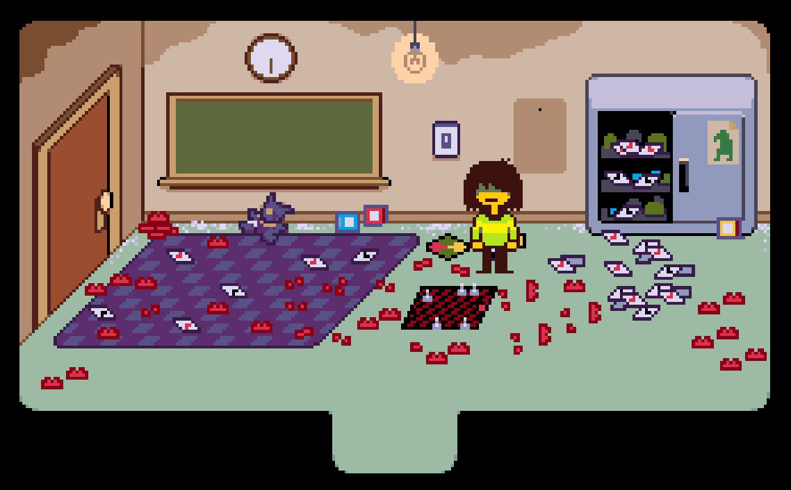
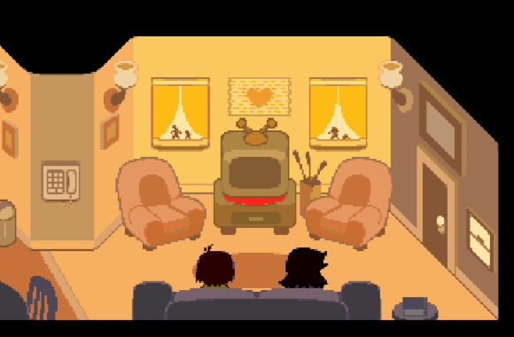
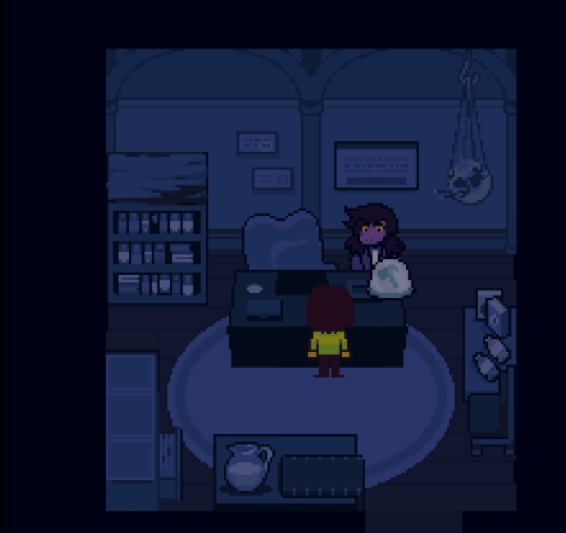
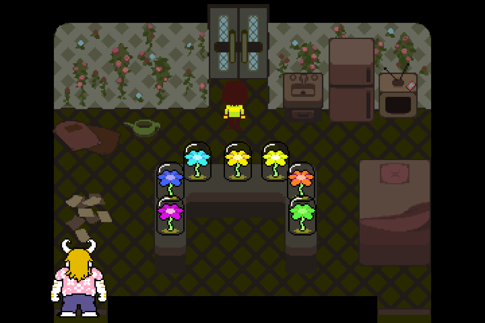

Three HEROES appear at WORLDS'edge.
 Chapter 1, The March of the Dark king

Chapter 2, The City of the Shining.
 Chapter 3, The Isles of Northernlight.

 Chapter 4, The Trials of the Holy Hammer.

 Chapter 5, The Field of Pink and Gold.
